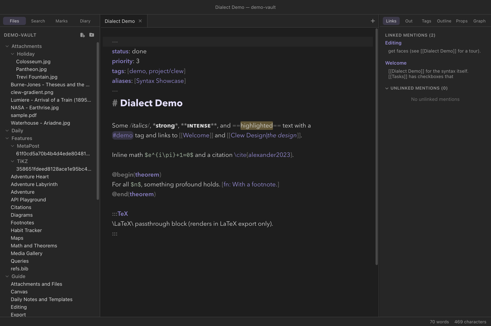
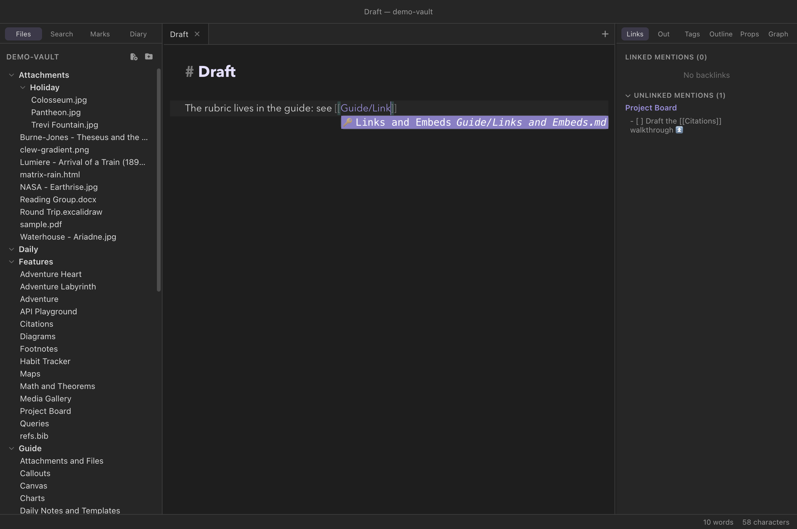

Writing
The editor
Notes are written in source mode: a plain-text editor built on CodeMirror 6 that understands the jmarkdown dialect — links, tags, citations, math, directives, and footnotes all get faces of their own. The editor saves for you, remembers your undo history even after you navigate away, and refuses to lose your work when the same file changes under it. One keystroke, ⌘E, flips between the source and the typeset result.
Source mode and reading mode
Every note tab is in one of two modes. Source mode shows the Markdown as you typed it; reading mode shows the same file rendered by the jmarkdown engine (the subject of its own chapter). ⌘E toggles between them, and each tab remembers its mode independently, so a reference note can sit rendered in one tab while you draft in another. A setting controls which mode newly opened notes start in.
The two modes are designed to be used together. Split the window (⌘\) and open the same note on both sides — source on the left, reading on the right — and the rendered pane updates in place as you type: scroll position and typeset math survive, and only the blocks you changed are re-rendered. The two panes scroll in sync, in both directions, and reading mode opens at your cursor line. Going the other way, ⌘-click any block in reading mode to jump the editor to that exact source line (inverse search).

Dialect-aware highlighting
The editor does not treat your notes as generic Markdown. A dedicated overlay scans each document for the jmarkdown dialect — the same constructs the engine will render — and paints them over the standard Markdown grammar. What gets a face of its own:
- Inline dialect spans —
/italics/,==highlights==, inline and display math ($…$,$$…$$),\cite{…}-family citations with their keys picked out, and the footnote openers[fn:and[^label:. - Wikilinks and tags —
[[Target]],[[Target|alias]],[[Target#Heading]], and![[…]]embeds, with brackets, target, and alias each styled;#tags, including nested ones like#project/clew. - Directives and environments —
:::name … :::container blocks (nesting by colon count),@begin(name) … @end(name)environments, inline:name[content]{.class}directives, and{{variables}}. Bodies that are really another language — the LaTeX inside:::TiKZor@begin(equation), mermaid diagram source,<script>and<style>blocks — are styled as embedded code rather than mis-read as prose. - The fences Clew typesets — the bodies of
```tikz,```latexand```texfences are tokenized as TeX (control sequences, environment names, comments, lengths, TikZ's path operators), and```metapostas MetaPost (its statements, types, constants and word operators, with the TeX of abtex … etexlabel highlighted as TeX), in the same palette as the mermaid bodies above. Every other fence is left as plain code. See Diagrams. - Standard Markdown — headings, lists, quotes, code,
and the emphasis forms
*strong*,**intense**, and__underline__come from the base Markdown grammar, restyled by the theme.
The same scan feeds the fold gutter: ::: directive blocks
and @begin(…)/@end(…) environments fold away,
which keeps a note full of large TikZ pictures or long proofs
navigable. The scanner is careful about context — a wikilink inside a
code fence, a #word inside a math span, or a slash in
/usr/bin never lights up.

Completions
Three completion sources run as you type. Each of them matches fuzzily — you can type fragments of the middle of a name — and each is fed live from the vault index, so new notes, tags, and references appear the moment they exist.
Wikilinks
Typing [[ pops the full list of notes in the vault;
continue typing to narrow it. The list includes every note name
and every alias declared in a note's frontmatter — aliases are
shown with an arrow to the path they resolve to. After a
#, the completions switch to the headings of the target
note, so [[Math and Theorems# offers that note's sections:
What you type is matched against both the note's name and its
folder path, and the letters need not be next to each other —
any subsequence will do. That is what makes long names cheap to reach:
[[mkrbrc finds Marking Rubric, and
[[Teaching/Rubric finds it by where it lives, even though
the full path runs through a folder you never typed. Folder names with
spaces are ordinary text here; nothing needs escaping.
/ inserts
the whole vault path, so the link points at the note you
picked rather than at whatever the bare name resolves to elsewhere.
A query without a slash inserts the plain name, which is the
Obsidian-shaped form and lets shortest-path resolution do its work.

[[Guide/Link finds Links and
Embeds by the folder it lives in. Choosing it inserts the whole
vault path, because the folder was part of the query.You write
See [[Math and Theorems#Dialect extras]] for the details.
Adding a caret — [[Math and Theorems#^ — switches the list
again, to the block
identifiers that note carries, each shown with the line it marks.
Names that do not resolve to anything can still be typed and linked — clicking such a link later creates the note (see Links and embeds).
Tags
Typing # at the start of a word offers every tag in the
vault, with a count of how many notes carry each one. Nested tags such
as #project/clew are offered whole.
Citations
Inside the braces of any \cite-family command —
\cite{, \citep{, \citet{,
\fullcite{, \citeauthor{, starred variants,
with or without the optional [pre][post] arguments — the
editor completes citation keys drawn from every .bib file
in the vault. Each candidate shows its author, year, and title, and the
fuzzy match runs over all three, so typing an author's name finds the
key. When a command holds several comma-separated keys, completion
applies to the segment after the last comma.
You write
The argument goes back to \cite{alexander2023}, though see
also \citep[cf.][ch. 2]{skyrms1996}.refs.bib anywhere in the vault — the demo vault
keeps one in Features/ — and citation completion works
vault-wide with no configuration. The entries are cached and refresh
whenever the vault's file tree changes. See
Citations and bibliographies for how the
rendered output works.
Formatting commands and the Format menu
The Format menu is a map of the whole jmarkdown
dialect: every label shows the exact syntax it produces, so the menu
doubles as a discovery tool for the
dialect chapter's contents. It covers the
inline styles (strong, intense, italic, underline, highlight,
strikethrough, subscript, superscript, code, math), headings, lists and
quotes, the alignment forms (>> text << centers,
>> text right-aligns), GitHub-style alerts, table
insertion, footnotes, citations, labels and references, and every block
container from :::mermaid and :::TiKZ to
:::TeX, :::game, and :::comment.
The commands behave the way you would hope:
- Inline styles toggle. Apply strong to text that is already strong and the markers are removed. The same goes for the list and quote commands — and applying the task-list command to a bullet list converts it directly into a task list.
- Containers wrap the selection. Select three
paragraphs and insert a
:::commentblock, and the fence goes around them; with nothing selected you get the fence with a placeholder ready to type over. - Insert wikilink (⌘K) wraps the
selection in
[[…]]— or, with nothing selected, inserts empty brackets and pops the note-name completion. The citation command does the same with\cite{}and the key completion. - Every item is a command. All of it is in the command palette (⌘P), and any item can be given a hotkey of your own in the hotkey editor — out of the box, only Insert wikilink (⌘K) and Insert template (⌘⌥T) carry default bindings.
*strong*, /italic/, ~strike~ —
and the editor's highlighting likewise assumes the dialect, even in a
vault where the per-vault Standard Markdown syntax
switch is on. In such a vault, prefer typing standard emphasis by hand;
the switch changes how notes render, not (yet) how the editor writes.
See the dialect chapter.
Tables you can type into
Markdown tables are miserable to hand-align, which is why so many people reach for a plugin. Clew's editor does it for you: put the cursor in a table and Tab walks the cells, ⇧Tab walks back, and Enter moves down a row. Either key at the end of the table adds a new row, which is how a table actually gets typed.
The table reflows on every move, so the columns line up as you go rather than after a fight:
You type, pressing Tab between cells
| Name | Qty | Cost |
| :- | --: | :-: |
| A very long name | 1 | 2 |and it becomes
| Name | Qty | Cost |
| :--------------- | ---: | :--: |
| A very long name | 1 | 2 |
Alignment comes from the delimiter row — :- left,
-: right, :-: centred — and applies to the header
too. CJK characters and emoji are counted as two columns wide, so a table
mixing scripts still lines up when you read it. A row with too few cells is
padded and one with too many widens the table, because being halfway
through typing is exactly when the help is wanted.
Format table at cursor in the command palette reflows without moving the cursor, for a table you pasted from somewhere else.
Hard-wrapping paragraphs
The editor soft-wraps long lines on screen, but some people — Emacs people especially — prefer prose stored as real lines, because a paragraph kept on one long line makes a git diff rewrite the whole paragraph for a one-word edit. Fill paragraph (⌥Q, Emacs' M-q) is that workflow: it rewraps the paragraph at the cursor to the fill column (default 72, adjustable in Settings → Appearance), joining short lines and breaking long ones. With a selection, every paragraph the selection touches is filled. Rendering is unchanged either way — a single newline inside a paragraph reads as a space.
The command knows what it must not touch. Code fences, frontmatter,
math blocks, tables, and headings are never joined or rewrapped; each
list item refills separately with a hanging indent under its marker;
blockquotes and callout bodies rewrap carrying their >
prefix; jmarkdown's centred blocks rewrap keeping both
delimiters, >> opening and <<
closing every line. A wikilink, inline code span, inline math, or
\cite{…} command is treated as a single unbreakable word,
so a line break can never fall inside one — and a break is never
placed where the next line would begin with something markdown reads
as new structure, like a stray -.
If you would rather never think about it, turn on
Auto-fill while typing (Settings → Appearance) —
Emacs' auto-fill-mode. Whenever you type a space with the
cursor past the fill column, the line breaks behind you at the last
fitting point and the word you are typing rides onto the next line,
prefix and all. It follows the same rules as the command — nothing
happens inside code, math, tables, or frontmatter, atoms stay whole,
and spacing between words is preserved — and it only ever acts on the
line you are typing, so pasting and editing elsewhere never reflow
anything. ⌥Q remains the way to re-fill a paragraph after
you edit its middle.
Auto-save: disk is the source of truth
There is no unsaved-document lifecycle to manage. About one second after you stop typing, the note is written to disk; switching tabs, clicking away from the editor, or closing a tab writes it immediately. ⌘S exists for the reflex, and forces the pending save right now.
Auto-save is not just a convenience — it is how rendering works. The jmarkdown engine renders the file on disk, so the saved file is always the source of truth: what reading mode shows, what exports produce, and what other apps see is exactly what has been saved, never an in-memory draft that exists only inside Clew.
Undo history survives navigation
Leaving a note does not discard its editing state. The editor banks the full CodeMirror state — undo history, cursor, selection — per note path, for the last 25 notes you have touched. Follow a link away, read three other notes, come back, and ⌘Z still unwinds your earlier edits.
There is one deliberate exception: the banked state is reused only when the file on disk still matches what that state holds. If the note was changed elsewhere in the meantime — another app, a git pull, a sync — the stale history is discarded and the editor starts fresh from the disk content, so undo can never resurrect a version that conflicts with what the file has since become.
External changes and conflicts
Clew watches the vault, so files edited by other programs — Obsidian, a sync client, a script — flow back in. What happens depends on whether you have unsaved edits of your own:
- Your editor is clean: the note reloads in place, silently, keeping your cursor position where possible.
- You have unsaved edits: a banner appears — "This file changed on disk while you have unsaved edits. Auto-save is paused." — and auto-save stays paused so your typing cannot clobber the on-disk version behind your back. The banner offers two buttons: Keep my version writes your editor's content over the disk version, and Load disk version discards your local edits and loads what is on disk. Nothing is overwritten until you choose.
Clew recognizes echoes of its own saves, so the watcher seeing a file change that Clew itself just wrote never triggers the banner.
Attachments by paste and drag
Paste an image from the clipboard, or drop any file onto the editor,
and Clew saves it into the vault's attachment folder (Settings →
Files, default Attachments/) and inserts an embed at the
cursor. The full story — viewer tabs, embed syntax, supported media —
is in Attachments and files
and Links and embeds.
Working with long notes
A few features earn their keep as notes grow:
- ⌘F opens find-and-replace within the note; ⌘⇧F searches the whole vault instead.
- The Outline panel in the right sidebar shows the note's heading tree — click to jump (see Panels).
- The fold gutter collapses directive blocks and
@begin/@endenvironments, so a note interleaving prose with long diagram or LaTeX bodies reads as prose. - Editor font size and line width are adjustable in Settings.
Reference
Default hotkeys relevant to editing (all rebindable in the hotkey editor; on Windows and Linux read ⌘ as Ctrl and ⌥ as Alt):
| Hotkey | Command |
|---|---|
| ⌘E | Toggle reading mode |
| ⌘S | Save note now (auto-save runs regardless) |
| ⌘F | Find in note |
| ⌘⇧F | Search in all files |
| ⌘K | Insert wikilink (pops note-name completion) |
| ⌘⌥T | Insert template |
| ⌥Q | Fill paragraph (hard-wrap to the fill column) |
| ⌘N | Create new note |
| ⌘O | Quick switcher |
| ⌘P | Command palette (every Format item lives here too) |
Completion triggers:
| You type | Completes | Drawn from |
|---|---|---|
[[ | Note names and aliases | The vault index (aliases from frontmatter) |
[[Note# | Headings of that note | The vault index |
# | Tags, nested included, with note counts | The vault index |
\cite{ (any \cite-family command) |
Citation keys, showing author, year, title | Every .bib file in the vault |
See also
- The jmarkdown dialect — every inline form the Format menu produces, and the Standard Markdown switch.
- Links and embeds — what wikilinks resolve to and what clicking them does.
- How rendering works — the other half of ⌘E.
- Attachments and files — where pasted and dropped files go.
- Settings and hotkeys — rebinding, editor font size and line width, new-tab mode.